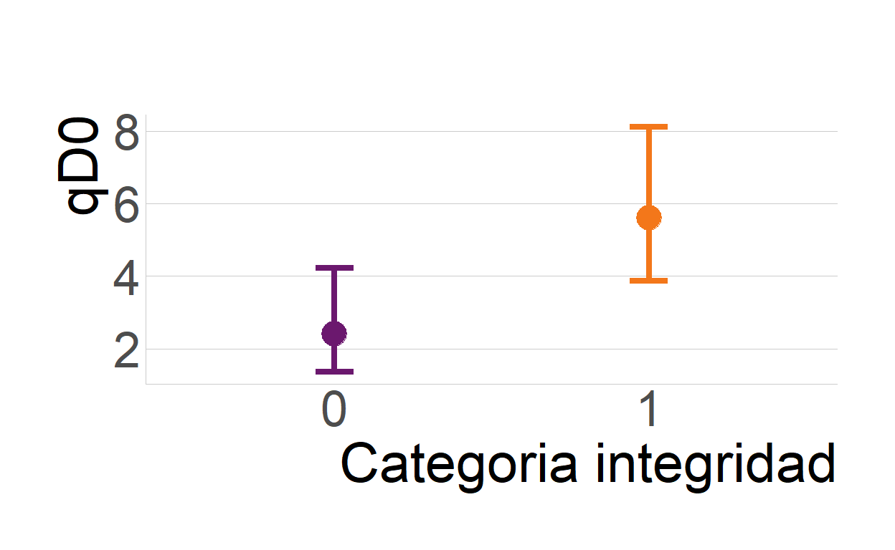

Librerías
library(iNEXT) # Interpolation and Extrapolation for Species Diversity
library(AICcmodavg) # Model Selection and Multimodel Inference Based on (Q)AIC(c)
library(ggeffects) # Create Tidy Data Frames of Marginal Effects for 'ggplot' from Model Outputs
library(DHARMa) # Residual Diagnostics for Hierarchical (Multi-Level / Mixed) Regression Models
library(performance) # Assessment of Regression Models Performance
library(patchwork) # The Composer of Plots
library(tidyverse) # Easily Install and Load the 'Tidyverse'
library(viridis) # Colorblind-Friendly Color Maps for R
library(hrbrthemes) # Additional Themes, Theme Components and Utilities for 'ggplot2'
library(ggpubr) # 'ggplot2' Based Publication Ready Plots
library(ggdist) # Visualizations of Distributions and Uncertainty
library(parameters) # Processing of Model Parameters
library(hillR) # Diversity Through Hill NumbersPreparación datos
57 58 60 61 62 63 64 65 66
Peromyscus sp. 11 3 0 1 2 28 11 1 7
P. morfo 1 7 11 3 37 42 26 25 22 21
P. morfo 2 7 2 3 0 0 15 0 8 9
R. fulvescens 0 0 0 1 0 0 7 1 3
L. irroratus 0 0 0 3 2 6 12 3 9
P. morfo 3 0 0 0 0 2 0 0 13 2
S. hispidus 0 0 0 0 0 7 0 2 8
C. parva 0 0 0 0 0 1 0 0 0Perfil de diversidad por nodo
Estimadores qD0, qD1 y qD2

Modelado
Modelamos la influencia de la integridad ecológica sobre los la diversidad taxonómica de los pequeños mamíferos. Empleamos
Modelo de riqueza (q0)
div_mod <- read.csv("Div.mod.csv", sep=",", header = T)
# Modelos qD0
summary(m0_qD0 <- glm(qD_0 ~ 1, data = div_mod, family = "poisson"))
Call:
glm(formula = qD_0 ~ 1, family = "poisson", data = div_mod)
Deviance Residuals:
Min 1Q Median 3Q Max
-2.8284 -0.5234 0.0000 0.6978 1.3545
Coefficients:
Estimate Std. Error z value Pr(>|z|)
(Intercept) 1.3863 0.1581 8.768 <2e-16 ***
---
Signif. codes: 0 '***' 0.001 '**' 0.01 '*' 0.05 '.' 0.1 ' ' 1
(Dispersion parameter for poisson family taken to be 1)
Null deviance: 14.31 on 9 degrees of freedom
Residual deviance: 14.31 on 9 degrees of freedom
AIC: 45.977
Number of Fisher Scoring iterations: 5
Call:
glm(formula = qD_0 ~ Integridad, family = "poisson", data = div_mod)
Deviance Residuals:
Min 1Q Median 3Q Max
-2.1909 -0.6011 0.2699 0.5201 0.9416
Coefficients:
Estimate Std. Error z value Pr(>|z|)
(Intercept) 0.8755 0.2887 3.033 0.00242 **
Integridad 0.8473 0.3450 2.456 0.01406 *
---
Signif. codes: 0 '***' 0.001 '**' 0.01 '*' 0.05 '.' 0.1 ' ' 1
(Dispersion parameter for poisson family taken to be 1)
Null deviance: 14.3100 on 9 degrees of freedom
Residual deviance: 7.7274 on 8 degrees of freedom
AIC: 41.395
Number of Fisher Scoring iterations: 5
Call:
glm(formula = qD_0 ~ X250_m, family = "poisson", data = div_mod)
Deviance Residuals:
Min 1Q Median 3Q Max
-2.8686 -0.4543 -0.1020 0.6799 1.3561
Coefficients:
Estimate Std. Error z value Pr(>|z|)
(Intercept) 0.5018 2.6251 0.191 0.848
X250_m 1.0125 2.9944 0.338 0.735
(Dispersion parameter for poisson family taken to be 1)
Null deviance: 14.310 on 9 degrees of freedom
Residual deviance: 14.193 on 8 degrees of freedom
AIC: 47.86
Number of Fisher Scoring iterations: 5
Call:
glm(formula = qD_0 ~ X1_km, family = "poisson", data = div_mod)
Deviance Residuals:
Min 1Q Median 3Q Max
-2.8411 -0.4384 -0.1055 0.7068 1.3815
Coefficients:
Estimate Std. Error z value Pr(>|z|)
(Intercept) 0.8419 1.1980 0.703 0.482
X1_km 0.6466 1.4032 0.461 0.645
(Dispersion parameter for poisson family taken to be 1)
Null deviance: 14.310 on 9 degrees of freedom
Residual deviance: 14.088 on 8 degrees of freedom
AIC: 47.755
Number of Fisher Scoring iterations: 5cand_q0 <- list(m0_qD0, m1_qD0, m2_qD0, m3_qD0)
names_q0 <- c("Nulo",
"qD0 ~ Integridad",
"qD0 ~ X250_m",
"qD0 ~ X1_km")
AICc_q0 <- aictab(cand_q0,
modnames = names_q0,
second.ord = T,
sort = T)
q0_predict <- ggpredict(m1_qD0, terms = "Integridad")
q0m2_predict <- ggpredict(m2_qD0, terms = "X250_m")
q0m3_predict <- ggpredict(m3_qD0, terms = "X1_km")
par_m0qD0 <- model_parameters(m0_qD0)
par_m1qD0 <- model_parameters(m1_qD0)
par_m2qD0 <- model_parameters(m2_qD0)
par_m3qD0 <- model_parameters(m3_qD0)Gráfico modelo qD0
qD0Plot <- ggplot(q0_predict, aes(x= as.factor(x), y=predicted, colour=as.factor(x)))+
geom_point(size=6)+
geom_errorbar(aes(ymin= conf.low, ymax= conf.high),
width= 0.12,
size=1.5)+
theme_ipsum_tw(grid="Y", axis=T)+
labs(x= "Categoria integridad", y="qD0",
title=NULL,
subtitle = "")+
theme(axis.text.x=element_text( size = 26),
axis.text.y=element_text(size = 26),
axis.title.y = element_text(size = 29),
axis.title.x = element_text(size = 29),
plot.title = element_text(size = 30),
plot.subtitle = element_text(size = 16),
legend.text = element_text(size = 16),
legend.position = "none")+
scale_color_viridis(discrete = T, option = "inferno", begin = 0.3, end= 0.7)
qD0Plot 
Modelo de especies igualmente abundantes (q1)
Call:
lm(formula = qD_1 ~ 1, data = div_mod)
Residuals:
Min 1Q Median 3Q Max
-2.8477 -1.0937 -0.2357 1.2718 2.8003
Coefficients:
Estimate Std. Error t value Pr(>|t|)
(Intercept) 2.8477 0.5278 5.396 0.000436 ***
---
Signif. codes: 0 '***' 0.001 '**' 0.01 '*' 0.05 '.' 0.1 ' ' 1
Residual standard error: 1.669 on 9 degrees of freedom
Call:
lm(formula = qD_1 ~ Integridad, data = div_mod)
Residuals:
Min 1Q Median 3Q Max
-2.2560 -0.3011 0.3023 0.5257 1.7200
Coefficients:
Estimate Std. Error t value Pr(>|t|)
(Intercept) 1.7674 0.5788 3.054 0.0157 *
Integridad 2.1606 0.8185 2.640 0.0297 *
---
Signif. codes: 0 '***' 0.001 '**' 0.01 '*' 0.05 '.' 0.1 ' ' 1
Residual standard error: 1.294 on 8 degrees of freedom
Multiple R-squared: 0.4655, Adjusted R-squared: 0.3987
F-statistic: 6.968 on 1 and 8 DF, p-value: 0.02973
Call:
lm(formula = qD_1 ~ X250_m, data = div_mod)
Residuals:
Min 1Q Median 3Q Max
-2.6883 -0.9058 -0.6157 1.3251 2.8043
Coefficients:
Estimate Std. Error t value Pr(>|t|)
(Intercept) 7.585 8.813 0.861 0.415
X250_m -5.431 10.085 -0.539 0.605
Residual standard error: 1.739 on 8 degrees of freedom
Multiple R-squared: 0.03498, Adjusted R-squared: -0.08564
F-statistic: 0.29 on 1 and 8 DF, p-value: 0.6049
Call:
lm(formula = qD_1 ~ X1_km, data = div_mod)
Residuals:
Min 1Q Median 3Q Max
-2.87048 -1.07442 -0.04955 1.26606 2.67431
Coefficients:
Estimate Std. Error t value Pr(>|t|)
(Intercept) 1.802 3.923 0.459 0.658
X1_km 1.248 4.637 0.269 0.795
Residual standard error: 1.762 on 8 degrees of freedom
Multiple R-squared: 0.008974, Adjusted R-squared: -0.1149
F-statistic: 0.07245 on 1 and 8 DF, p-value: 0.7946cand_q1 <- list(m0_qD1, m1_qD1, m2_qD1, m3_qD1)
names_q1 <- c("Nulo",
"qD1 ~ Integridad",
"qD1 ~ X250_m",
"qD1 ~ X1_km")
AICc_q1 <- aictab(cand_q1,
modnames = names_q1,
second.ord = T,
sort = T)
q1_predict <- ggpredict(m1_qD1, terms = "Integridad")
q1m2_predict <- ggpredict(m2_qD1, terms = "X250_m")
q1m3_predict <- ggpredict(m3_qD1, terms = "X1_km")
par_m0qD1 <- model_parameters(m0_qD1)
par_m1qD1 <- model_parameters(m1_qD1)
par_m2qD1 <- model_parameters(m2_qD1)
par_m3qD1 <- model_parameters(m3_qD1)qD1Plot <- ggplot(q1_predict, aes(x= as.factor(x), y=predicted, colour=x))+
geom_point(size=3)+
geom_errorbar(aes(ymin= conf.low, ymax= conf.high),
width= 0.11,
size=0.8)+
theme_ipsum_tw(grid="Y", axis=T)+
labs(x= "Categoria de integridad", y="qD1")+
theme(axis.text.x=element_text( size = 18),
axis.text.y=element_text(size = 18),
axis.title.y = element_text(size = 19),
axis.title.x = element_text(size = 19),
plot.title = element_text(size = 20),
plot.subtitle = element_text(size = 16),
legend.text = element_text(size = 16),
legend.position = "none")+
scale_color_viridis(discrete = T, option = "inferno", begin = 0.3, end= 0.6)Modelo de especies dominantes (q2)
Call:
lm(formula = qD_2 ~ 1, data = div_mod)
Residuals:
Min 1Q Median 3Q Max
-2.4641 -1.0138 -0.0371 0.9026 2.3109
Coefficients:
Estimate Std. Error t value Pr(>|t|)
(Intercept) 2.4641 0.4518 5.455 0.000403 ***
---
Signif. codes: 0 '***' 0.001 '**' 0.01 '*' 0.05 '.' 0.1 ' ' 1
Residual standard error: 1.429 on 9 degrees of freedom
Call:
lm(formula = qD_2 ~ Integridad, data = div_mod)
Residuals:
Min 1Q Median 3Q Max
-2.0228 -0.2722 0.1984 0.5255 1.4552
Coefficients:
Estimate Std. Error t value Pr(>|t|)
(Intercept) 1.6084 0.5255 3.061 0.0156 *
Integridad 1.7114 0.7431 2.303 0.0502 .
---
Signif. codes: 0 '***' 0.001 '**' 0.01 '*' 0.05 '.' 0.1 ' ' 1
Residual standard error: 1.175 on 8 degrees of freedom
Multiple R-squared: 0.3987, Adjusted R-squared: 0.3235
F-statistic: 5.304 on 1 and 8 DF, p-value: 0.05024
Call:
lm(formula = qD_2 ~ X250_m, data = div_mod)
Residuals:
Min 1Q Median 3Q Max
-2.2629 -0.5996 -0.5544 0.9700 2.3160
Coefficients:
Estimate Std. Error t value Pr(>|t|)
(Intercept) 8.445 7.381 1.144 0.286
X250_m -6.858 8.446 -0.812 0.440
Residual standard error: 1.456 on 8 degrees of freedom
Multiple R-squared: 0.07612, Adjusted R-squared: -0.03936
F-statistic: 0.6592 on 1 and 8 DF, p-value: 0.4403
Call:
lm(formula = qD_2 ~ X1_km, data = div_mod)
Residuals:
Min 1Q Median 3Q Max
-2.47386 -0.99023 0.02134 0.90019 2.25692
Coefficients:
Estimate Std. Error t value Pr(>|t|)
(Intercept) 2.0163 3.3696 0.598 0.566
X1_km 0.5347 3.9824 0.134 0.897
Residual standard error: 1.514 on 8 degrees of freedom
Multiple R-squared: 0.002248, Adjusted R-squared: -0.1225
F-statistic: 0.01803 on 1 and 8 DF, p-value: 0.8965cand_q2 <- list(m0_qD2, m1_qD2, m2_qD2, m3_qD2)
names_q2 <- c("Nulo",
"qD2 ~ Integridad",
"qD2 ~ X250_m",
"qD2 ~ X1_km")
AICc_q2 <- aictab(cand_q2,
modnames = names_q2,
second.ord = T,
sort = T)
q2_predict <- ggpredict(m1_qD2, terms = "Integridad")
q2m2_predict <- ggpredict(m2_qD2, terms = "X250_m")
q2m3_predict <- ggpredict(m3_qD2, terms = "X1_km")
par_m0qD2 <- model_parameters(m0_qD2)
par_m1qD2 <- model_parameters(m1_qD2)
par_m2qD2 <- model_parameters(m2_qD2)
par_m3qD2 <- model_parameters(m3_qD2)qD2Plot <- ggplot(q2_predict, aes(x= as.factor(x), y=predicted, colour=x))+
geom_point(size=3)+
geom_errorbar(aes(ymin= conf.low, ymax= conf.high),
width= 0.11,
size=0.8)+
theme_ipsum_tw(grid="Y", axis=T)+
labs(x= NULL, y="qD2")+
theme(axis.text.x=element_text( size = 18),
axis.text.y=element_text(size = 18),
axis.title.y = element_text(size = 19),
plot.title = element_text(size = 20),
legend.text = element_text(size = 16),
legend.position = "none")+
scale_color_viridis(discrete = T, option = "inferno", begin = 0.3, end= 0.6)Gráfico conjunto
modQsPlot <- qD0Plot + qD1Plot + qD2PlotBondad de ajuste de los modelos
testDispersion(m1_qD0)
DHARMa nonparametric dispersion test via sd of residuals
fitted vs. simulated
data: simulationOutput
dispersion = 0.49567, p-value = 0.304
alternative hypothesis: two.sidedcheck_overdispersion(m1_qD0)# Overdispersion test
dispersion ratio = 0.685
Pearson's Chi-Squared = 5.476
p-value = 0.706check_model(m1_qD1, check = c("qq","linearity", "normality"))
check_normality(m1_qD1)OK: residuals appear as normally distributed (p = 0.398).plot(check_normality(m1_qD1), type= "qq")
windows()
check_model(m1_qD2)
check_normality(m1_qD2)OK: residuals appear as normally distributed (p = 0.397).plot(check_normality(m1_qD2), type= "qq")
Adicional
Web hecha con el paquete distill Estilo basado en Teaching in Production